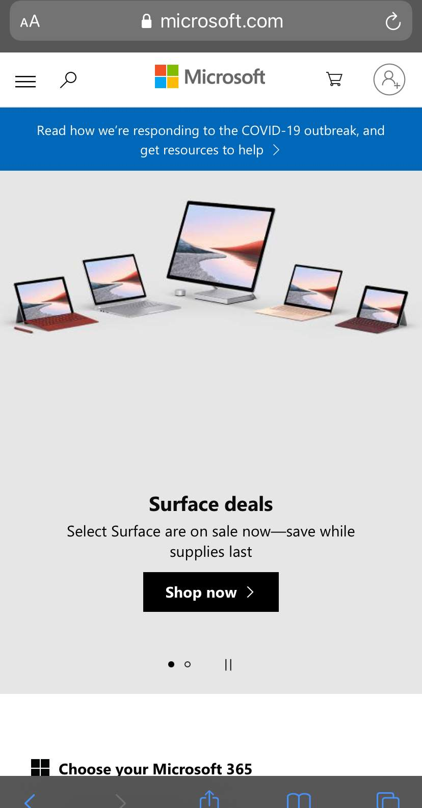

Microsoft
Microsoft.com

Contrast in the context of visual design can be defined as a difference between two or more elements in a composition. Microsoft uses bright colors on a white backgroups to bring focus to their products.
The contrast draws the user into the Surface mobile devices and laptops.